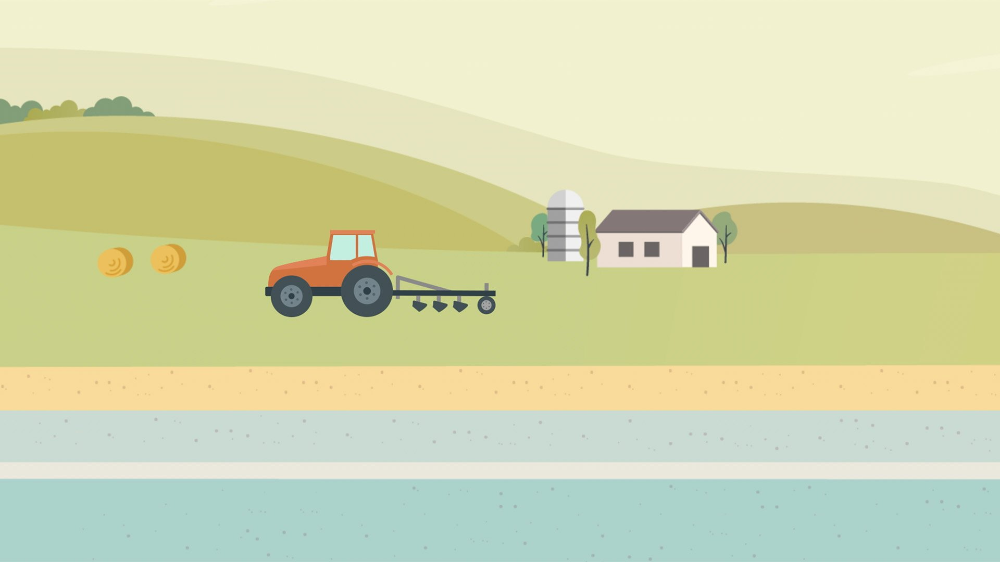
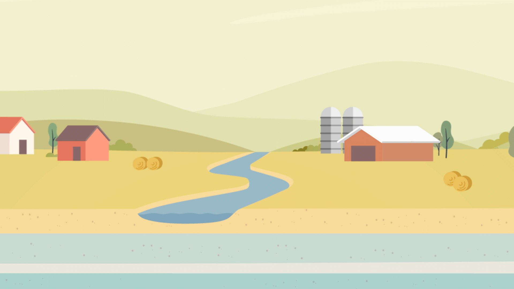
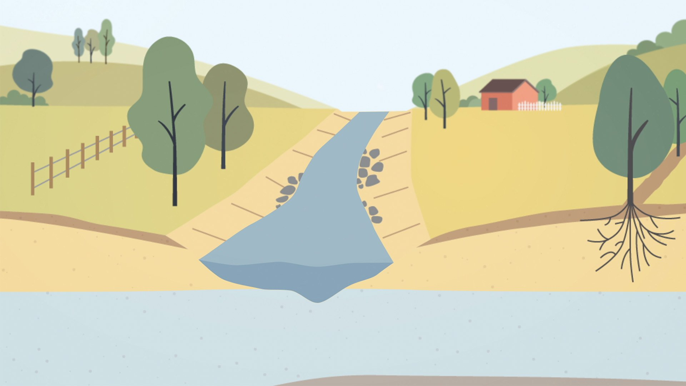
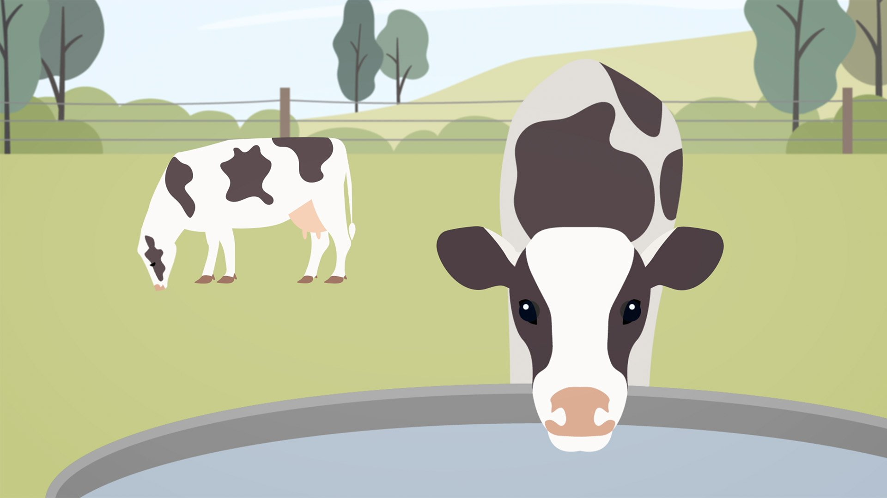
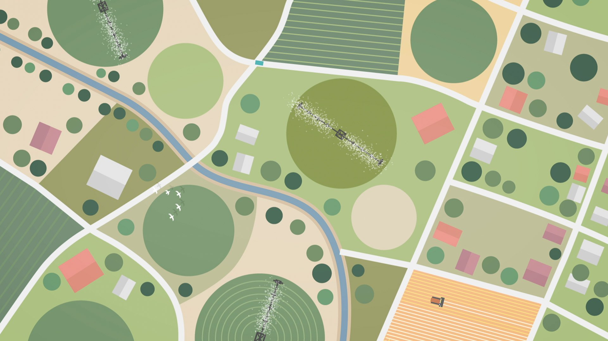
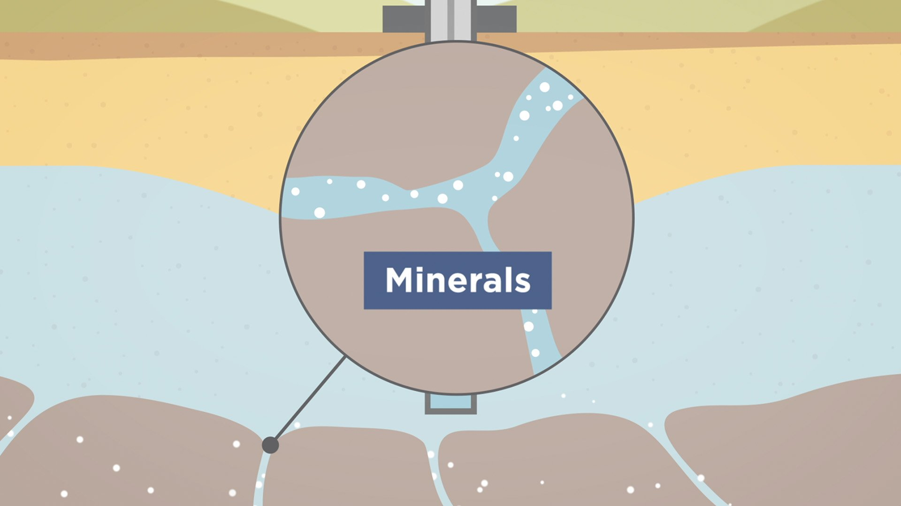

Government · Environment
Making the Invisible Visible: What is Groundwater?
Groundwater is easy to manage badly and hard to explain well - it's literally invisible. After prolonged drought put the state's groundwater systems under public scrutiny, the Department needed a way to help people understand how groundwater works and how access and management decisions get made.
I led creative direction, illustration and motion design on an explainer animation built around a calm, clear visual narrative, translating technical and regulatory content into something the public could follow without a background in hydrology. Seasonal cycles became the visual device for showing time passing and groundwater recovering - a simple metaphor doing a lot of explanatory work.
The animation launched on the Department's website and social channels in both long-form and shortened cuts, and established a trusted public narrative around groundwater management. Its reception led to a six-part animation series extending the same approach across the core aspects of groundwater management.





